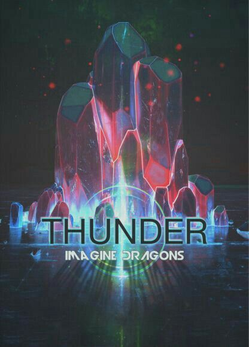
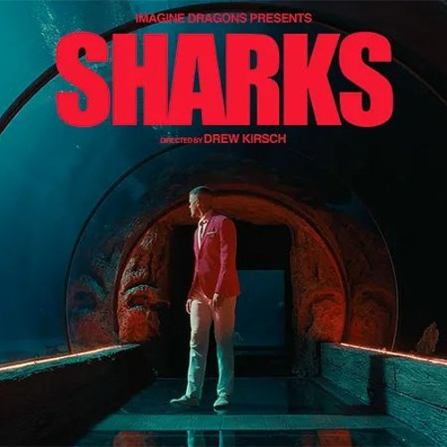
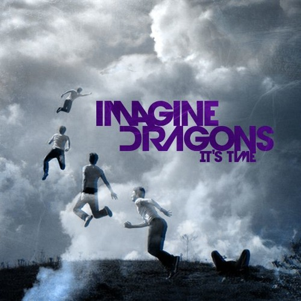
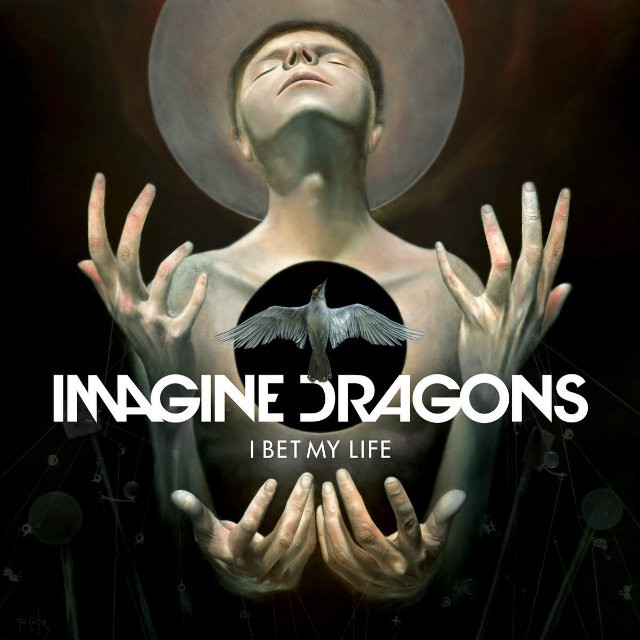
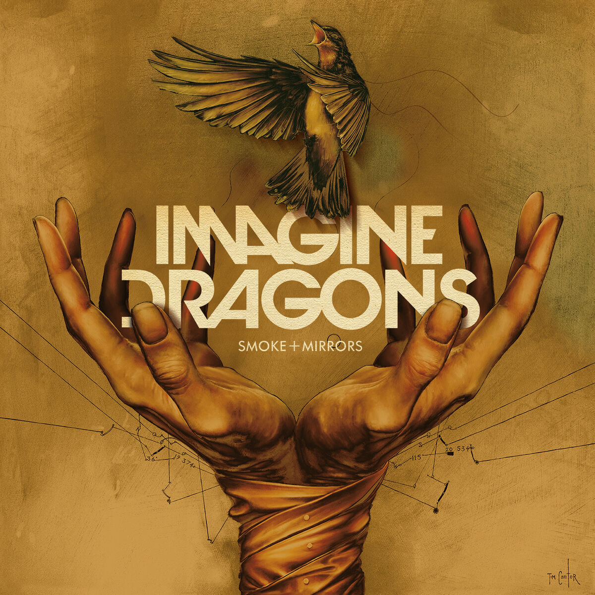
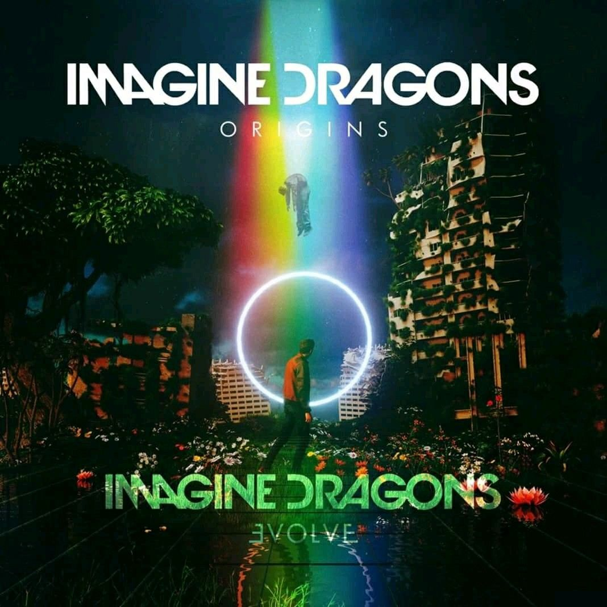

MEJORES CANCIONES
- Thunder 
- Sharks 
- It's Time 
MEJORES ALBUMES
- I Beat my Live 
- Smoke + Mirrors 
- Origins 
BIOGRAFÍA
Imagine Dragons es una banda estadounidense de pop rock originaria de Las Vegas, Nevada. Está compuesta por Dan Reynolds, Wayne Sermon y Ben McKee. Ganó el reconocimiento mundial con el lanzamiento de su álbum de estudio debut «Night Visions» (2012), y con su canción «It's Time».
TRAYECTORIA
Billboard los colocó en la cima de su lista de popularidad de 2013 "Year In Rock", y los llamó "la banda revelación de 2013". La revista Rolling Stone llamó a su canción «Radioactive» del álbum «Night Visions» "el mayor éxito rock del año". Mientras que MTV los llamó "la banda revelación del año". «Radioactive» es la segunda canción con más semanas dentro del Billboard Hot 100 en la historia, con un total de 87 semanas.
PREMIACIONES
- Imagine Dragons fue el grupo número 4 con más "stream" en Spotify en los Estados Unidos en 2013, pero tuvo el álbum y la canción con mayor número de "streams" del año.
- Imagine Dragons fue el grupo No. 4 más "Shazameado" ( E.U.A.) en Shazam en 2013, pero fue el artista de rock más "shazameado" del año.
- Imagine Dragons fue el grupo número 6 con más streaming en 2013 (sólo hubo dos artistas estadounidenses en el top).
- Imagine Dragons fue el grupo número 13 con más "streams" de todos los tiempos en Spotify a partir de noviembre de 2014.
- Imagine Dragons fueron el grupo con más streaming en el mundo en Spotify en 2014.